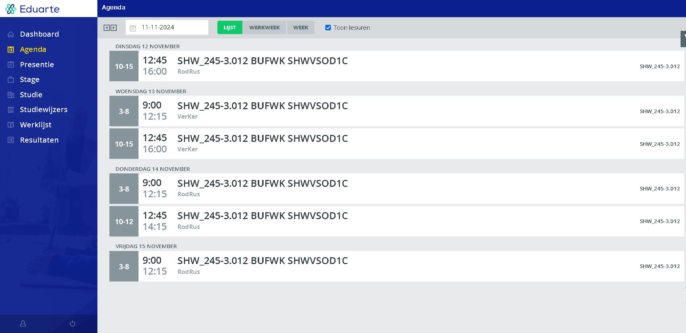
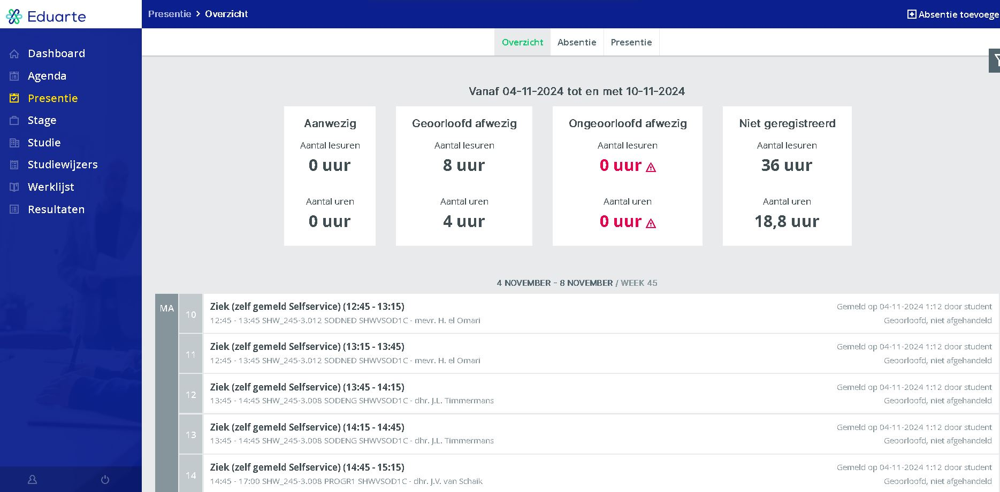
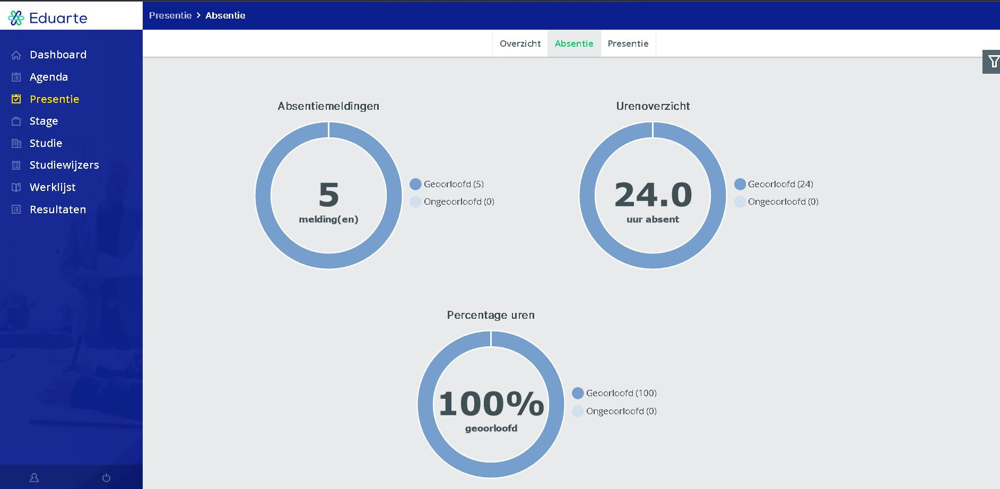
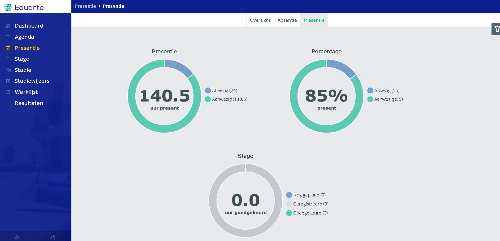

Met eduarte kun je veel informatie over je studie terugvinden. Het gaat dan bijvoorbeeld om: Je agenda met lestijden, je presentie, waar je stage loopt en de resultaten van de gemaakte toetsen/examens.

Met eduarte kun je veel informatie over je studie terugvinden. Het gaat dan bijvoorbeeld om: Je agenda met lestijden, je presentie, waar je stage loopt en de resultaten van de gemaakte toetsen/examens.
Met de onderstaande link kunnen wij naar het studentenportaal van Eduarte toe.
↓
Op de website van Eduarte kun je je rooster bekijken. Hier zie je de weekoverzicht. Hierin staat wat je gaat doen, wanneer, van wie en welk lokaal.
Je presentie kan je hier ook vinden. Hier zie je weekelijkse- en gemiddelde aanwezigheid; Ook vind je hier je absentie.
  Op deze pagina is het ook mogelijk om jezelf absent te melden.
Voor de ouders van studenten onder de 18 en de ouders van studenten boven de 18 die toestemming hebben, kunnen jullie ook in deze studentenomgeving terecht. Dit is belangrijk omdat u hier de aanwezigheid van uw kind kunt aanpassen indien er complicaties zijn. Verder krijgt u dezelfde informatie net zoals de student.